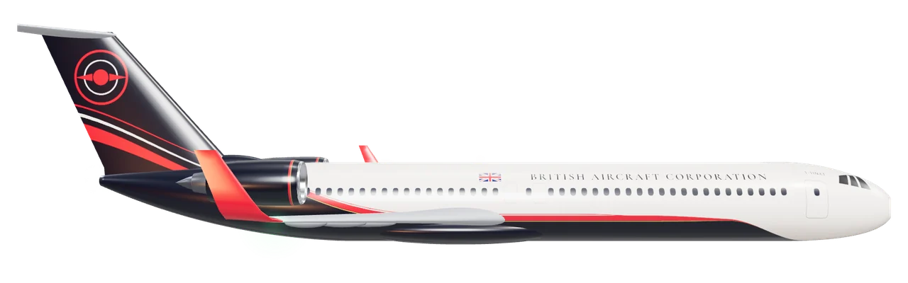
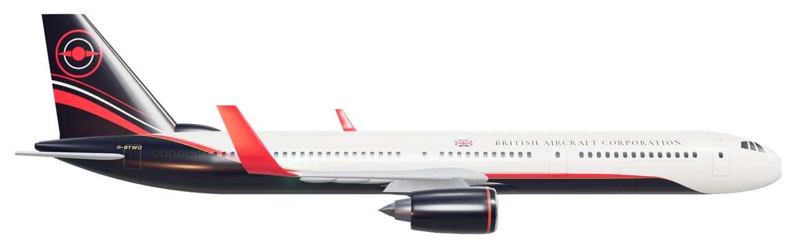
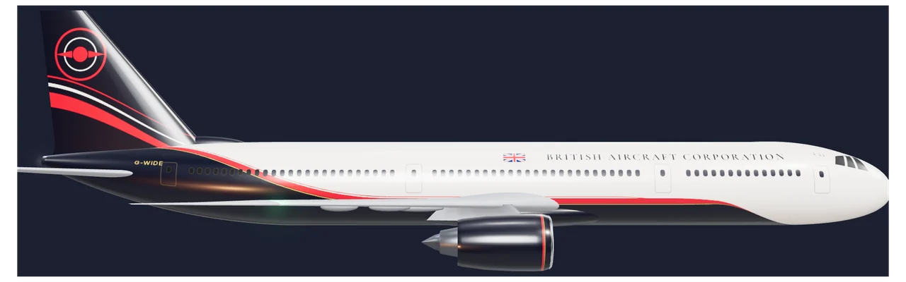
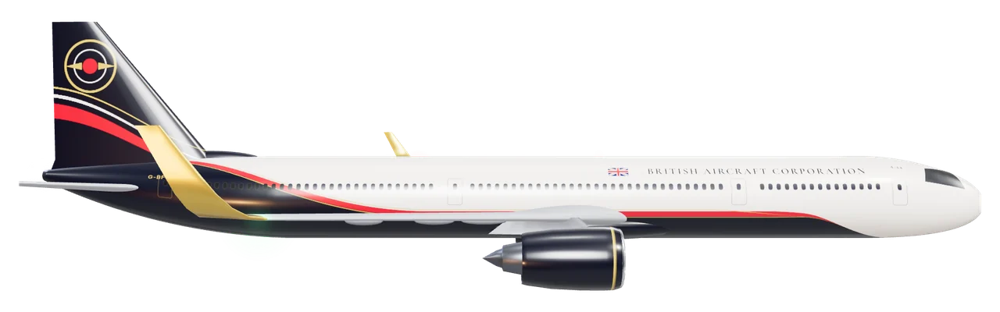
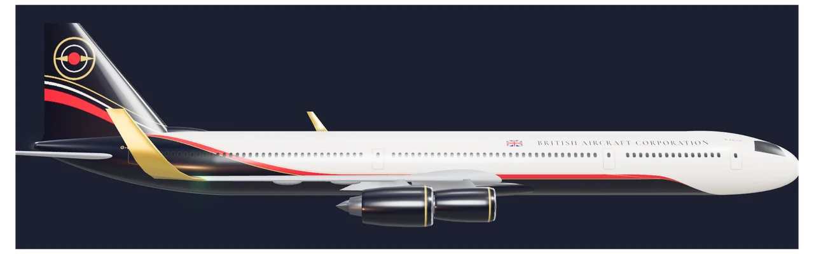

British Aircraft CorporationBristol, England
The Fleet.
Five aircraft. Every mission.
Specifications · 2026 edition
02
Narrow-body · Short to medium haul
BAC 1-11NXT
The spiritual successor to the jet that defined British short-haul.


- Extended range versus the original One-Eleven by 340%
- Composite fuselage — 18% lighter than aluminium equivalent
- SAF-100 compatible from entry into service
- Fully fly-by-wire with advanced envelope protection
- New wide cabin — 18-inch seats standard in economy
- Lower cabin altitude — 6,000 ft equivalent
03
Medium narrow-body · 757 replacement
BAC 2-22
The aircraft the industry has been waiting two decades for.


- True 757 replacement — same versatility, modern economics
- Single-aisle cabin, 6-abreast, 19-inch minimum seat width
- Extended lower-deck cargo holds for belly freight revenue
- Overwing exits enabling a 240-seat high-density configuration
- Common maintenance training with the 1-11NXT
- ETOPS-240 certified from entry into service
04
Wideboy widebody · 767-400ER class
BAC 3-33
Generous of cabin. Cheeky of positioning.


- 2-4-2 economy seating — no middle-of-five seats
- Full lie-flat business class capability at 2-2-2
- Twin-aisle boarding — 25% faster turnaround versus narrow-body
- Nose-to-tail composite airframe — lightest in class
- Advanced load management for mixed cargo-passenger ops
- ETOPS-330 rated — reaches anywhere from anywhere
05
Long-range widebody · A350 class · Twin engine
BAC 4-44
The long-haul backbone of the BAC family.


- Twin UHBR turbofans — 18:1 bypass ratio, 25% better fuel burn than the previous generation
- ETOPS-370 certified — reaches anywhere from anywhere
- 3-3-3 economy, 2-2-2 premium economy, 1-2-1 business
- Panoramic cabin windows — 30% larger than the previous generation
- Advanced humidity management — 4,000 ft equivalent cabin altitude
- Lower-deck crew rest compartments for long-haul routing
06
Ultra-long-range widebody · Flagship
BAC 4-44ULR
Where in the world can you not fly nonstop? Nowhere.


- Certified range: 19,000 km — London to Sydney nonstop
- Four engines — ETOPS irrelevant, redundancy absolute
- Rear auxiliary fuel tank — 127,000 litre total capacity
- Circadian rhythm cabin lighting across all 21 time zones
- Premium-only configuration option for ultra-premium ops
- Dedicated wellness zone — stretch, light therapy, rest pods
07
At a glance
One family, side by side.
| Specification | BAC 1-11NXT | BAC 2-22 | BAC 3-33 | BAC 4-44 | BAC 4-44ULR |
|---|---|---|---|---|---|
| Role | Narrow-body | Medium narrow-body | Wideboy widebody | Long-range widebody | Ultra-long-range widebody |
| Max seats | 189 | 240 | 310 | 369 | 380 |
| Typical seats | 162 | 202 | 260 | 323 | 232 |
| Range | 5,400 km | 7,200 km | 12,000 km | 15,500 km | 19,000 km |
| Cruise | Mach 0.78 | Mach 0.80 | Mach 0.85 | Mach 0.85 | Mach 0.86 |
| Length | 39.6 m | 47.3 m | 58.8 m | 70.9 m | 73.4 m |
| Wingspan | 35.8 m | 41.2 m | 56.4 m | 64.8 m | 64.8 m |
| Height | 11.4 m | 13.6 m | 16.9 m | 17.2 m | 17.4 m |
| MTOW | 79,000 kg | 116,000 kg | 218,000 kg | 319,000 kg | 352,000 kg |
| Engines | 2 × 120 kN | 2 × 165 kN | 2 × 300 kN | 2 × 430 kN | 4 × 225 kN |
| Cabin width | 3.70 m | 3.70 m | 5.45 m | 5.61 m | 5.61 m |
| Entry into service | 2028 | 2029 | 2030 | 2030 | 2032 |
Ready to build the next chapter of aviation?
Order, leasing and support enquiries
r9-beep.github.io/website/contact/
All specifications provisional and subject to change without notice. A design concept. © 2026 British Aircraft Corporation Ltd.